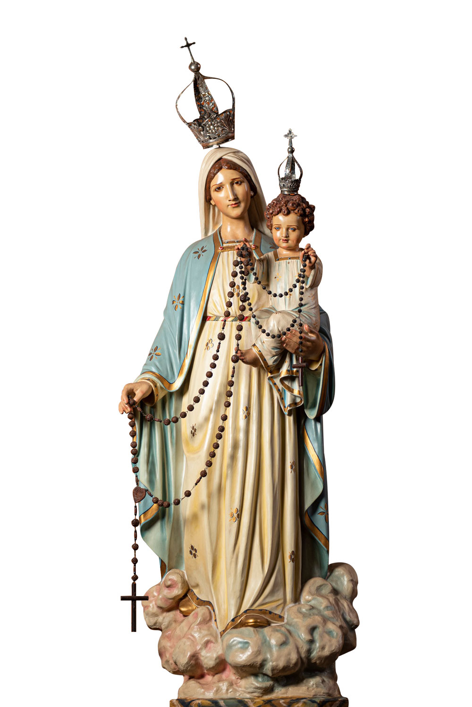

30 anos do EJC na Paróquia do Rosário
Jovens que encontraram Cristo e deixaram um rastro de luz.
Um espaço simples, bonito e feito para o EJC, reunindo histórias curtas de santos, beatos e testemunhos de vida cristã para inspirar oração, amizade e missão.
Escolha um testemunho
Cada card leva para uma página individual.

Paróquia do Rosário - Campina Grande
Nossa Senhora do Rosário, rogai por nós.
Projeto foi preparado para o EJC da Paróquia Nossa Senhora do Rosário, em Campina Grande, celebrando a caminhada de fé, juventude e serviço da comunidade.